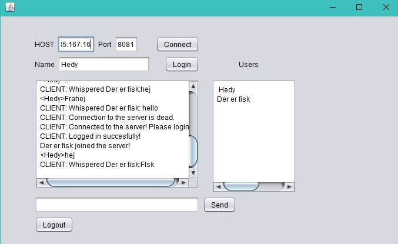
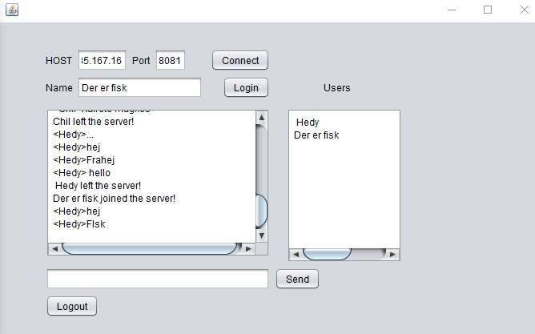
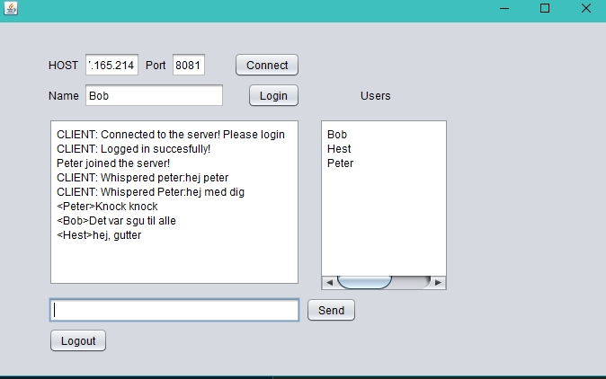
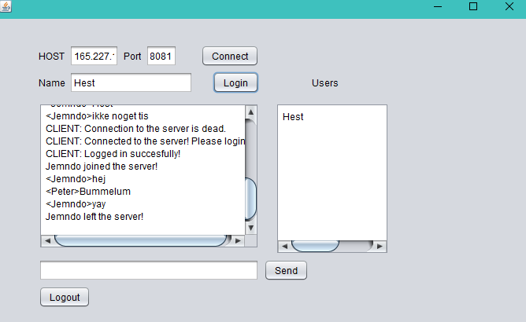

We were tasked with creating a chat system with a client and a server. The system should be able to handle many users at once. The service should also be online on one of our servers and should follow a protocol that the teachers had provided, so we would be able to test our solution against other groups.
Since the client and server should be deployed separately, we chose to create two java projects.
Server:
When the server starts, we bind the Server Socket and execute the MessageHandler in a new thread, which is the class
that writes to the other clients. We then loop and listens for connections and if someone connects, then
we create a new ClientHandler, which implements Runnable, and execute it with its own thread, so we are able
to have more clients at once. If the client follows the protocol and successfully logged in, he is then added
to an ArrayList with ClientHandlers. If anything is wrong with the client's login protocol or the name is
taken, we close the connection.
The ClientHandler is constantly listening for input. If the input is LOGOUT:, then we remove the Client
from the ArrayList and close the connection. If the client connection dies, we remove him from the list. If the
client tries to chat and follow the protocol, then we create a new Message, which gets the input value, the
List of clients and this ClientHandler, as the sender. We then put this Message into an ArrayBlockingQueue located
in our MessageHandler, which then sends the message, if it followed protocol, to all relevant receivers.
Each time the ArrayList of Clients are changed, we send a message to all the logged in users.
Client:
We designed our client with an observer pattern, so that you are able to use it with different GUIs.
Download the client HERE and run it.
Then in the host you enter jdbh.dk and in the port 8081 and click connect, if you able to connect, then
the GUI will tell you.
Then you enter your name into the name square and click login.
If the name is taken or is not valid then GUI will tell you that the connection is dead.
Online users are shown in box ontop of the send button.
To write to all on the server, you type your message in the rectangle to the left of send and press
the send button. Example: "mymessage".
To send to a private message you type: "nameOfuser:yourmessage"
To send a private message to more
users, then type: "name1,name2:yourmessage".
Click logout or press the red X in the top to logout.
If the server is down you need to run the ServerInit.class in CA2-Server project.
You can also use telnet and connect to jdbh.dk 8081.
All test involves logging in and logging out, sending to all, sending a private message to one clients, and sending a private message to two clients.
 Test of our gui against Group 1 server worked. They tried to use their gui against ours and it worked.
 Test of our GUI against Group 11's server worked somewhat. Their list on the server did not update correctly because of an exception, when the client just closes the connection without logging out. Also something was wrong with their gui, so they have not tested their gui with our server.
Group 10 and Group 15 tested our server and said it worked, but we did not have an working GUI at that time, so we did not test their server.
We all worked on the project, and alot of it was done on a single pc, so the commits might not be proportionate with the amount of work each group member did.